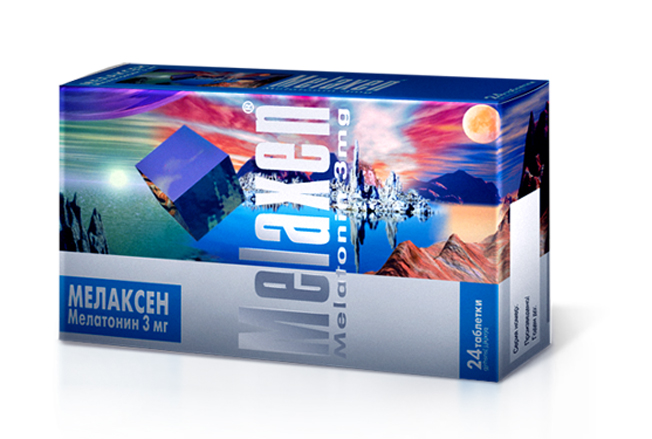

Melaxen
Описание товара:
круглые, двояковыпуклые таблетки, покрытые оболочкой от белого до белого с желтоватым оттенком цвета, с разделенной риской с одной стороны таблетки.
Характеристики препарата:
- Мелаксен — химический аналог биогенного амина Мелатонина.
- Химическая формула N-ацетил-5-метокситриптамин.
- Молекулярная масса 232.
- Растворяется в воде, спирте, липидах.
- Хорошо проникает через гемато-энцефалический барьер.
Синтезирован из аминокислот растительного происхождения.
Подробное описание:
Является синтетическим аналогом гормона шишковидной железы эпифиза.
Нормализует циркадные ритмы.
Регулирует цикл сон-бодрствование, суточные изменения локомотивной активности и температуры тела.
Способствует нормализации ночного
сна (ускоряет засыпание, снижает число ночных пробуждений,
улучшает самочувствие после утреннего пробуждения,
не вызывает ощущения вялости, разбитости и усталости при пробуждении,
сновидения становятся более яркими
и эмоционально насыщенными).
Адаптирует организм к быстрой смене часовых поясов, снижает стрессовые реакции.
Проявляет иммуностимулирующие и выраженные антиоксидантные свойства.
Тормозит секрецию гонадотропинов,
в меньшей степени — других гормонов аденогипофиза — кортикотропина, тиреотропина и соматотропина.
Не вызывает привыкания и зависимости.
Состав препарата:
Активное действующее вещество — Мелатонин, 3 мг;
Вспомогательные вещества:
- кальция гидрофосфат
- целлюлоза микрокристаллическая
- магния стеарат
- оболочка
- тальк
- шеллак
- изопропанол